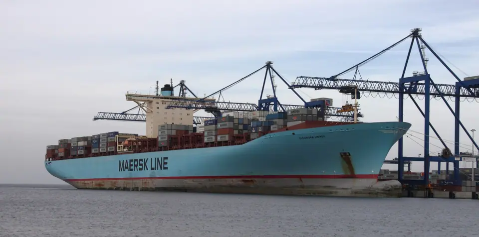
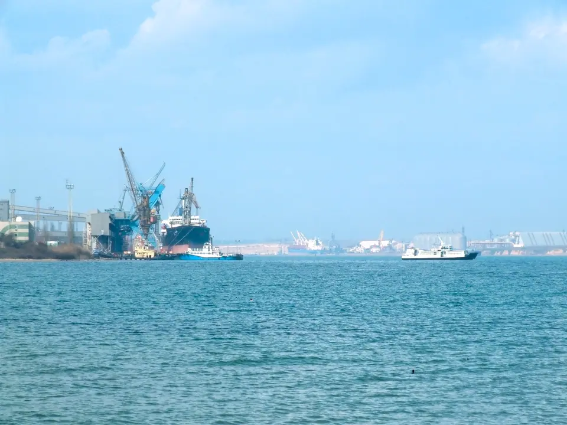
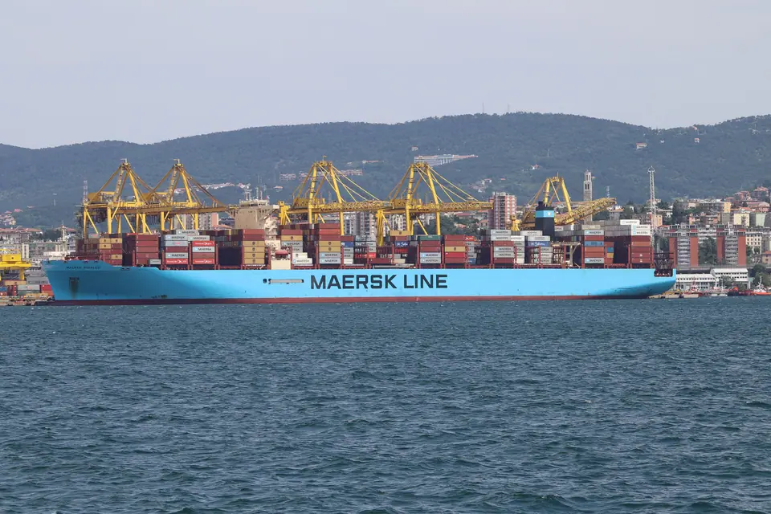

Автори та ліцензії
Ми використовуємо лише реальні фотографії та роботи інших авторів за відкритими ліцензіями. Дякуємо кожному з них.
Фотографії · Wikimedia Commons











3D-моделі · Sketchfab
- Container Ship — Автор: RM02 · Ліцензія: CC BY 4.0 · Джерело ↗ · оптимізовано для вебу
- KALMAR DRU450 — Автор: KJLOYH · Ліцензія: CC BY 4.0 · Джерело ↗ · оптимізовано для вебу
- Antonov AN-225 — Автор: KOG_THORNS (@ioai25312) · Ліцензія: CC BY 4.0 · Джерело ↗ · оптимізовано для вебу
- MAN TGX 2010 V8 – High-Detail Semi-Truck — Автор: DevPoly3D · Ліцензія: CC BY 4.0 · Джерело ↗ · оптимізовано для вебу
- Container 4 Colors — Автор: Shorty_Digitan · Ліцензія: CC BY 4.0 · Джерело ↗ · оптимізовано для вебу
- Metal Billboard Advertising Single Sided — Автор: Jotrain · Ліцензія: CC BY 4.0 · Джерело ↗ · оптимізовано для вебу
- Metal road billboard single sided — Автор: Frice · Ліцензія: CC BY 4.0 · Джерело ↗ · оптимізовано для вебу
- Checkpoint Gate — Автор: Anshinowara2 · Ліцензія: CC BY 4.0 · Джерело ↗ · оптимізовано для вебу
- Traffic light — Автор: Ronata-Venya · Ліцензія: CC BY 4.0 · Джерело ↗ · оптимізовано для вебу
- Maple tree — Автор: atrodler · Ліцензія: CC BY 4.0 · Джерело ↗ · оптимізовано для вебу
- Bulk Carrier — Автор: medialog · Ліцензія: CC BY 4.0 · Джерело ↗ · оптимізовано для вебу
Шрифти та дані
- Inter — Rasmus Andersson · SIL Open Font License 1.1
- Inter Tight — Rasmus Andersson · SIL Open Font License 1.1
- JetBrains Mono — JetBrains · SIL Open Font License 1.1
- Orbitron — Matt McInerney · SIL Open Font License 1.1
- Natural Earth — картографічні дані, суспільне надбання · naturalearthdata.com ↗
- three.js, GSAP, Lenis — MIT / Standard License